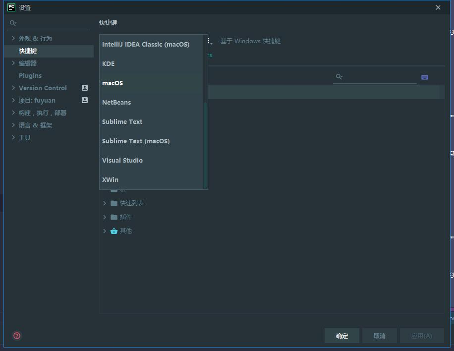

pycharm常用快捷键介绍及十大实用技巧
一、前言
毫无疑问Pycharm是一个具有强大快捷键系统的IDE，这就意味着你在Pycharm中的任何操作，例如打开一个文件、切换编辑区域等，都可以通过快捷键来实现。使用快捷键不仅能提高操作速度，看起来也会非常酷。然和，如果你已经习惯使用一些快捷键方案，你的手指就会习以为常，改变起来就比较困难。
如果你对快捷键有超高要求的话，你可以根据你自己的习惯来量身定制Pycharm快捷键设置，使你用起来得心应手。对于基本的快捷键的组合、用法这里不再赘述，详情可参考Configuring keyboard shortcuts或者 Keymap。
当然如果你之前有其他同类软件的经验的话，你也可以选择一个pycharm内置的其它软件快捷键的配置方案
这一步非常简单，在主工具栏中单击设置按钮，在设置对话框中单击 Keymap。

二、pycharm常用快捷键
1、编辑（Editing）
Ctrl + Space 基本的代码完成（类、方法、属性） Ctrl + Alt + Space 快速导入任意类 Ctrl + Shift + Enter 语句完成 Ctrl + P 参数信息（在方法中调用参数） Ctrl + Q 快速查看文档 F1 外部文档 Shift + F1 外部文档，进入web文档主页 Ctrl + Shift + Z --> Redo 重做 Ctrl + 鼠标 简介/进入代码定义 Ctrl + F1 显示错误描述或警告信息 Alt + Insert 自动生成代码 Ctrl + O 重新方法 Ctrl + Alt + T 选中 Ctrl + / 行注释/取消行注释 Ctrl + Shift + / 块注释 Ctrl + W 选中增加的代码块 Ctrl + Shift + W 回到之前状态 Ctrl + Shift + ]/[ 选定代码块结束、开始 Alt + Enter 快速修正 Ctrl + Alt + L 代码格式化 Ctrl + Alt + O 优化导入 Ctrl + Alt + I 自动缩进 Tab / Shift + Tab 缩进、不缩进当前行 Ctrl+X/Shift+Delete 剪切当前行或选定的代码块到剪贴板 Ctrl+C/Ctrl+Insert 复制当前行或选定的代码块到剪贴板 Ctrl+V/Shift+Insert 从剪贴板粘贴 Ctrl + Shift + V 从最近的缓冲区粘贴 Ctrl + D 复制选定的区域或行 Ctrl + Y 删除选定的行 Ctrl + Shift + J 添加智能线 Ctrl + Enter 智能线切割 Shift + Enter 另起一行 Ctrl + Shift + U 在选定的区域或代码块间切换 Ctrl + Delete 删除到字符结束 Ctrl + Backspace 删除到字符开始 Ctrl + Numpad+/- 展开/折叠代码块（当前位置的：函数，注释等） Ctrl + shift + Numpad+/- 展开/折叠所有代码块 Ctrl + F4 关闭运行的选项卡
2、查找/替换(Search/Replace)
F3 下一个
Shift + F3 前一个
Ctrl + R 替换
Ctrl + Shift + F 或者连续2次敲击shift
#全局查找{可以在整个项目中查找某个字符串什么的，如查找某个函数名字符串看之前是怎么使用这个函数的}
Ctrl + Shift + R 全局替换3、运行(Running)
Alt + Shift + F10 运行模式配置 Alt + Shift + F9 调试模式配置 Shift + F10 运行 Shift + F9 调试 Ctrl + Shift + F10 运行编辑器配置 Ctrl + Alt + R 运行manage.py任务
4、调试(Debugging)
F8 跳过 F7 进入 Shift + F8 退出 Alt + F9 运行游标 Alt + F8 验证表达式 Ctrl + Alt + F8 快速验证表达式 F9 恢复程序 Ctrl + F8 断点开关 Ctrl + Shift + F8 查看断点
5、导航(Navigation)
Ctrl + N 跳转到类 Ctrl + Shift + N 跳转到符号 Alt + Right/Left 跳转到下一个、前一个编辑的选项卡 F12 回到先前的工具窗口 Esc 从工具窗口回到编辑窗口 Shift + Esc 隐藏运行的、最近运行的窗口 Ctrl + Shift + F4 关闭主动运行的选项卡 Ctrl + G 查看当前行号、字符号 Ctrl + E 当前文件弹出，打开最近使用的文件列表 Ctrl+Alt+Left/Right 后退、前进 Ctrl+Shift+Backspace 导航到最近编辑区域 Alt + F1 查找当前文件或标识 Ctrl+B / Ctrl+Click 跳转到声明 Ctrl + Alt + B 跳转到实现 Ctrl + Shift + I查看快速定义 Ctrl + Shift + B跳转到类型声明 Ctrl + U跳转到父方法、父类 Alt + Up/Down跳转到上一个、下一个方法 Ctrl + ]/[跳转到代码块结束、开始 Ctrl + F12弹出文件结构 Ctrl + H类型层次结构 Ctrl + Shift + H方法层次结构 Ctrl + Alt + H调用层次结构 F2 / Shift + F2下一条、前一条高亮的错误 F4 / Ctrl + Enter编辑资源、查看资源 Alt + Home显示导航条F11书签开关 Ctrl + Shift + F11书签助记开关 Ctrl + #[0-9]跳转到标识的书签 Shift + F11显示书签
6、搜索相关(Usage Search)
Alt + F7/Ctrl + F7文件中查询用法 Ctrl + Shift + F7文件中用法高亮显示 Ctrl + Alt + F7显示用法
7、重构(Refactoring)
F5复制F6剪切 Alt + Delete安全删除 Shift + F6重命名 Ctrl + F6更改签名 Ctrl + Alt + N内联 Ctrl + Alt + M提取方法 Ctrl + Alt + V提取属性 Ctrl + Alt + F提取字段 Ctrl + Alt + C提取常量 Ctrl + Alt + P提取参数
8、控制VCS/Local History
Ctrl + K提交项目 Ctrl + T更新项目 Alt + Shift + C查看最近的变化 Alt + BackQuote(’)VCS快速弹出
9、模版(Live Templates)
Ctrl + Alt + J当前行使用模版 Ctrl +Ｊ插入模版
10、基本(General)
Alt + #[0-9]打开相应的工具窗口 Ctrl + Alt + Y同步 Ctrl + Shift + F12最大化编辑开关 Alt + Shift + F添加到最喜欢 Alt + Shift + I根据配置检查当前文件 Ctrl + BackQuote(’)快速切换当前计划 Ctrl + Alt + S 打开设置页 Ctrl + Shift + A查找编辑器里所有的动作 Ctrl + Tab在窗口间进行切换
以上文章转自:https://www.cnblogs.com/Pythonzrq/p/11346578.html
三、十大实用技巧
1.自动生成导入
您正在编写代码，想导入一个包，只记得包名，但是忘了它在那个py文件了，可以通过 pycharm 自动导入。当你写了一个包名，pycharm会有提示是否需要导入，选择后将根据您的项目样式以正确的方式生成导入。

（动画加载需要8秒，耐心等待）
2.批量移动类和方法
当你重构代码时，需要把一些类或者函数移动到其他的文件时，如果你是通过对类进行剪切粘贴到其他文件，这样做的话你真是个小可爱。pycharm 提供了 move 的功能，它可以帮你批量移动类或者方法，连类的依赖都帮你处理了。

（动画加载需要8秒，耐心等待）
3.快速跳转到最近编辑的文件
如果你的项目文件很多，想要在文件之间跳转要怎么做呢？使用“最近的文件”操作可以在正在处理的文件之间快速跳转。您会得到一个低中断弹出式窗口，该弹出式窗口是键盘友好的，可让您在正在查看的文件之间跳转。快捷键是 Ctrl-E on Windows/Linux and Cmd-E on the Mac。按两次会有惊喜呦！

（动画加载需要8秒，耐心等待）
4.快速返回上次操作的地方
比如你查看某个库的源代码后，想快速返回去，除了用鼠标点击返回，还可以使用键盘快捷键 Ctrl-Alt-左/右 Win / Linux，Option-Cmd-左/右 macOS 。

（动画加载需要8秒，耐心等待）
5.快速添加新的一行
我们经常在另一行中间添加一行代码。也许我们正在修复某些问题，并希望继续进行下一行。一般需要两个步骤， 转到该行的末尾，按回车在上面添加一行，或者转到行的开头按 Enter 键在上方留出空间，按向上键转到该新的空行，也许按几次Tab键以使缩进正确，而是使用Start New Line功能（Shift-Enter Win / Linux / macOS）。
将光标放在当前行中的任何位置（刚刚完成编辑），然后可以使用正确的缩进获得空的下一行。对于上面的行，请使用“在当前位置之前开始新行”（Ctrl-Alt-Enter Win / Linux，Option-Cmd-Enter macOS。），您会得到一条新行，并根据语言和上下文进行了缩进。

（动画加载需要8秒，耐心等待）
6.使用键盘快速的选择代码
在编码中，我们选择代码并对其进行操作。例如，将其移至另一行，更改其缩进等。您可以使用鼠标进行选择。或者，使用键盘。例如，使用将插入符移动到带有选择的上一个单词（Shift-Ctrl-左/右Win / Linux，option-Shift-左/右macOS）来将光标向前或向后移动一个单词，如果要选择三个词呢？做三遍？。
在 Python 代码中，你经常希望从光标所在的位置逐步扩展选择范围：符号，子语句，完整语句，行，块等。扩展选择范围（Ctrl-W或Shift-Ctrl -W Win / Linux，Option-Up / Down macOS）是理想的选择。它在语义上起作用。持续按下它，直到获得所需的选择。

（动画加载需要8秒，耐心等待）
7.使用键盘向上/向下移动代码块
我们希望在编辑器中快速处理代码。使用剪切粘贴是一种快速的方法，但是有一种更好的方法可以暂时不从文件中删除代码。进行选择（不使用鼠标），然后使用（Shift-Alt-Up / Down Win / Linux，Option-Shift-Up / Down macOS）将该选择移至目标行。在视图中，所选内容会一直拖动。

（动画加载需要8秒，耐心等待）
8.重命名文件及其引用
你为一个变量起了一个名字。但是后来你又想换成另外一个名称。你不想费心找到所有使用它的地方。搜索和替换可能会发现大量误报。可以通过重命名（Shift-Ctrl-Alt-T， Win / Linux，Ctrl-T，macOS）以更改文件名和名称。最重要的是，如果您改变主意，则撤消会将其作为一项编辑器事务恢复到原处。

（动画加载需要8秒，耐心等待）
9.快速查看函数文档
我们经常遇到不确定的代码。别人的代码。甚至我们的代码。有时我们只想要函数的参数。我们想知道位置参数与关键字参数。或参数的类型。或其默认值。PyCharm具有多种功能，可向您显示有关符号的文档。
首先，快速文档（Ctrl-P Win / Linux，F1 macOS）带来了显示所有信息的非干扰性内联弹出窗口，并带有一个超链接，您可以在其中导航到定义。
接着再按一次，弹出窗口将变成一个工具窗口，该窗口会针对您所登陆的每个符号进行更新。一直存在，一直在帮助...直到您要隐藏它，就像其他任何IDE工具窗口一样。

（动画加载需要8秒，耐心等待）
10.批量删除没有被使用的包
当你某个代码文件引入了很多包，但是有些包没有别使用，你无需手动一个一个的删除未被引用的包，可以使用 Optimize Imports 功能，快捷键是Alt-Ctrl-字母0 Win / Linux，Control-Option-字母O macOS，pycharm 会批量帮你清除未被使用的包。

（动画加载需要8秒，耐心等待）
十大技巧文章来源于程序猿Leo ，作者菜鸟哥
文章评论 2
赞！
顶一个